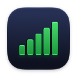
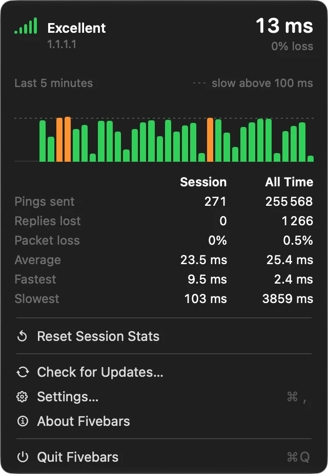
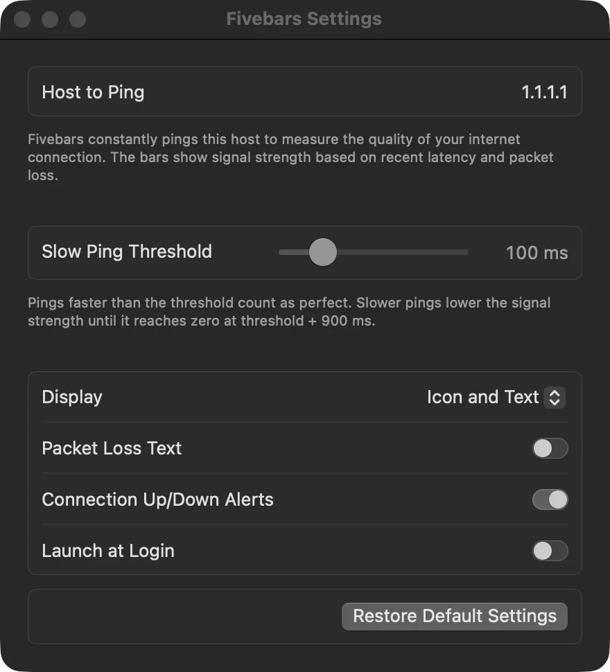
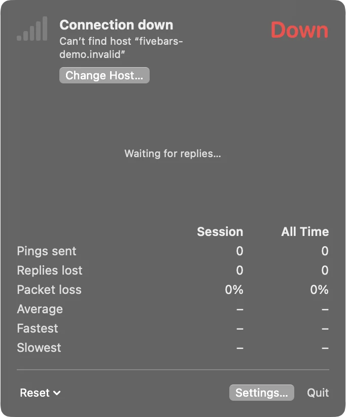

One glance.
Five bars.
Fivebars puts your internet connection in the Mac menu bar: five signal bars and your latest ping time, updated every second. All five bars means fast and steady. Fewer means slow or lost pings.
A native Mac app, about 4 MB to download. No account, no tracking. It pings one host you choose and checks for updates once a day.
- macOS 14 or later
- Apple silicon
- No root, no helper

- Pings every
- 1 s
- Bars cover
- 30 s
- Default host
- 1.1.1.1
- Slow above
- 100 ms
- Lost after
- 4 s
- Failed after
- 8 s
Read it like your phone.
More bars, better connection. Fivebars scores each ping from the last 30 seconds, counts the newest ones most, and turns the result into bars. One lost ping costs you a bar for a few seconds; a dead line shows a warning triangle.
- ExcellentFast replies, nothing missing.
- GoodA slow or lost ping or two lately.
- FairOften slow, or dropping pings.
- PoorMostly slow, or losing pings regularly.
- Very poorBarely getting through.
- FailedNo reply for 8 seconds. It keeps retrying, and the menu says why.
Thirty pings.
One groove.
Here are the last 30 pings as a drum machine, oldest first. Click a key to make that ping fast, slow, crawling or lost, and the screen shows the bars Fivebars would draw. Drag the slow ping slider to see how much your threshold forgives. Then press play and listen to your connection.
Fivebars PS-30
Excellent
5 bars · score 1.00 · loss 0%
The rules, in full
- At or under the slow ping threshold: a perfect 1.
- Slower: falls in a straight line to 0 at threshold + 900 ms, then on down to −2.5.
- No reply within 4 s: lost, −2.5.
- Newer counts more: each step weighs 1.2× the one before it, so a tunnel two seconds ago hurts and one from 25 seconds ago barely registers.
bars = min(floor(clamp(score, 0, 1) × 5), 4) + 1
Play groove turns your pattern into six bars of 5/4 in D minor at 120 BPM: five beats a bar, like the five bars in your menu bar, with the accents grouped three plus two. One step per beat is 2× faster than the real thing, which pings once a second. Each step plays by its score under your slow ping threshold, so moving the slider changes the groove: steps at or under it keep a tight groove, slower ones swing and soften the further they fall, ones that score 0 or less drag and go out of tune, lost ones drop out into vinyl crackle. The window score sets the filter: a good connection sounds bright, a bad one sounds muffled. Nothing plays until you press it.
No dashboard to read.
Plenty of network monitors give you graph windows with five time ranges, a list of targets and a jitter chart. They are good at proving an outage after the fact.
Fivebars answers one question while you work: is my connection good right now? You can read the bars from across the room. The numbers are one click away when you want them.
Inside
The menu
Click the bars, left or right, for the details: the quality word, the host and its address, the last five minutes of ping times with your slow ping threshold dashed in and lost pings in red, and statistics for this session and all time.

Settings
Pick the host to ping, how often (every 1 to 60 seconds) and how slow counts as slow (50 to 2000 ms). Show bars, ping time or both, packet loss always or only while pings are lost, and turn on connection alerts and launch at login. Choose Settings in the menu to get here.

When it’s down
The bars turn into a warning triangle and Failed. Open the menu to see why, here a host that doesn’t exist, and fix it with Change Host.
Says when it’s down, and why
A warning triangle and
Failedwhen nothing comes back for 8 seconds. The menu names the cause: no network, host not found, or no replies. Optional alerts when it drops and when it’s back.Recovers on its own
Starts again after sleep, Wi-Fi switches, VPNs, cable changes and DNS failures, without waiting for a timeout.
Fits your menu bar
Matches light and dark menu bars at any scale. The ping always takes four characters,
48msunder 100 ms and0.4sfrom there, so the item holds still as the numbers change. Add packet loss for48ms (4%).No admin password
Plain pings over IPv4 and IPv6, sent without root or a helper tool. Nothing to install but the app.